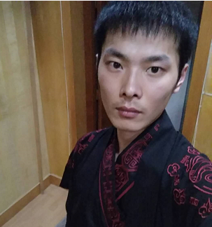

王钊
- 性别：男
- 年龄：25岁
- 手机号：15075296687
- 微信号：wang-wuyang
- 邮箱：1062534243@qq.com
- 个人网站:https://wangwuyang.cn

其他资料
-
教育经历
2013.9——2016.6
保定职业技术学院计算机系应用技术专业专科
-
工作经历
保定崇汇生物科技有限公司
2017.4——2018.5
工作内容
公司是家规模挺大的广告运营类公司，我在分公司的技术部工作，基本上都是纯前端的工作- 负责为公司制作各种静态单页面
- 负责为公司维护很多页面
- 负责维护公司网站的windows(IIS)服务器
- 负责将公司想要应用的新功能找到解决方案并实施
工作业绩
- 前端有项任务是在服务器上更换广告页面的微信号的 规模很大 频率很高（算是插件出现前的“核心业务”）， 去的时候我弄了半个多月觉得太累了，感觉可以用js简化操作， 就用js写了一个辅助脚本，方便了很多,后来其他分公司和总公司也都用上了，给发了1.5个月薪水的奖金 (结合数据库的话可以更加方便，在那时候了解了些php和数据库的相关语法，不过后来因为种种原因，就做罢了)
- 公司领导经常让我弄一些新功能试验效果，每次都能实现领导想要的效果(当然现在来看，都是很简单的技术)
保定鑫云医疗器械销售有限公司
2018.9——2018.11
工作内容
是上一家公司的简化版，平常主要是做一些比较简单的广告的静态单页面，跟广告运营沟通什么的，都是些极其简单的小页面，没啥技术难度工作业绩
满足了公司对技术的所有要求，不过太闲了，仔细算下来，一天工作时间可能连半小时也不到， 过了一个月 公司为了降低支出 就商谈离职了，保持联系，由全职转为了按单收费保定健鸿科技有限公司
2018.11——2019.1
工作内容
公司很小，只有我一个前端和一个php后端进行APP的开发工作（对标的货拉拉），工期一个月，感觉有些悬，不过既然已经来了，那就做吧。 1、负责公司APP的套壳开发，对美工、设计也有所涉及。 2、负责写好h5页面并使用mui框架将页面转换为套壳APP。 3、与公司PHP后端进行前后端不分离的接洽（此后再也不想进行不分离式的开发了）工作业绩
我和一个PHP后端用时一个半月（需求不明+经验不足+人员不够），把安卓和苹果的APP的基础功能都制作完成了， 时间有限，具体要抄什么细节上的功能项目经理还没想好，就暂且放下没做，后期招了ui， 在对页面进行美观处理时被辞退（我询问经理时经理说是总经理嫌项目进展太慢了，嗯，我自己也觉得确实慢， 不过…也挺无奈的，需求是我照着几个APP整理下来的，不能照抄，UI也是自己想，这里浪费了很多时间； 再加上当时对框架不熟悉，用的原生js开发的，确实慢。）保定市点动软件科技有限公司
2019.1.28——今
工作内容
- 公司业务主要是给别人做各种定制项目，大类的话就是PC的OA系统、ERP系统，混合APP、H5、小程序; 我在公司主要负责移动h5开发、混合开发(前端开发,用js调用一些手机原生的方法)，有时候会帮同事搞下PC开发
工作业绩
粉色：合作；红色：独自完成；黑色：他人- 前中期有时候会没什么工作可做，项目经理带着我们做过 OA、ERP 的两个练手项目,为以后做积累(加起来大概快两个月)
- 跟一个即将离职的前端+一个java后端一起做了个 大气尾气监测系统的一期项目 ,由PC+手机端H5组成
- 大气尾气监测系统的二期 由我+一个java后端做成了PC、手机端H5、安卓APP三种
- 一个规模相对较大的ERP的某制造企业的管理系统项目，初期由两个前端、三个java开发，我是后期抽调进入的， 由PC端(管理系统框架基础上开发，vue-cli脚手架+element+vuejs)+vue打包成的APP(vuejs+vant框架)组成 我负责改后期PC的一部分BUG, 以及编写绝大部分手机端的html+css， 以及手机端转序模块、审批模块的开发， 我用的vue-cli脚手架 + vant框架+原生JS+git 开发；
-
掌握技能
- 熟练掌握h5/css3，移动+PC开发响应式开发、混合开发（apicloud） vue.js框架、vant框架、git，有较为自信的原生js能力
- 掌握webpack、es6、移动套壳开发
- 了解svn、element框架、iview框架、node.js、mui框架、uni-app
- 有很强的实现需求能力，擅长站在用户角度想问题，很注重页面的性能的优化
- 对代码的可维护性、可扩展性有了较深的了解
- 举一反三 对各大框架的接受学习能力较强
- 项目地址:wangwuyang.cn
-
项目经历
-
政府的尾气环境检测系统
项目介绍
一共有两期，第一期做了PC和H5(工期近一个月)，第二期新增了APP，同时大幅完善一期的内容；(工期也是近一个月)，
政府环保局人员通过PC端和APP端进行管理、审批等操作,公司和车主通过H5页面进行登记、查看、编辑、生成二维码等操作;人员构成与技术栈:
我刚来的时候跟一个即将离职的前端+一个java后端一起做了这个系统的一期项目;
用的是原生JS + mui框架 + vue.js ;
后来开始了二期开发，前端由我+大气尾气监测系统的二期由我+一个java后端一起开发;
我用的是APICloud框架+原生JS+vue.js+vant框架
项目详情
PC是由后端通过公司基于layui的模板制作的，偶尔有问题我们前端会尽量帮忙解决;
APP是我用APICloud框架+vue.js + vant框架 + 原生js制作的
手机端H5页面是我在一期的基础上重构制作的（一期用了大量原生js，而另一个人可能是着急离职，做的也特别马虎， 所以为了更方便的维护以及其他基础不好的人能看懂，就用vue大规模重构了）,挑战与收获
- 之前有过OA系统和ERP系统的的练习项目，那时候边学边用APICloud，也算积累下了不少经验,不过因为小，很多东西没用到，突然多了不少新东西，查文档和应用的过程中耗费了较多的时间
- 踩了一些较为深刻的坑 关于JS和手机原生之间的区别和应用场景有了较深的认知.
-
大洋塑料工序生产管理系统
项目介绍
人员构成与技术栈:
项目详情
挑战与收获
- 这期间对vue-cli脚手架的理解和运用能力有了很大的提高，以前都是自己没事的时候手动配置webpack,对相关的理解还是比较慢的
- vue.js用的日益熟练了，经过几个项目，对可维护性、代码性能等的认知有了极大的提高
- 对vant.js框架的理解和运用能力有了极大的提高，一通百通，对element框架的学习也有了很大的帮助
-